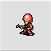 An Infantry's primary function lies in the fact that it is the cheapest unit capable of capturing properties on the map.
The secondary function of infantry is to block your more valuable units from being attacked. While weak defensively, infantry can usually take at least one attack from most direct combat units before being destroyed. This prevents the opponent from hitting more valuable units in the process, and also potentially leaves them open to a counterattack from your defended units.
Infantry are also effective at blocking certain tiles that you do not want your opponent to take control off, such as cities or other tiles with high defense ratings. Infantry can block air units from flying over them as well.
| Cost | 1000 |
| Movement | 3 (Foot) |
| Fuel | 99 |
| Range | 1 |
| Primary Weapon | None |
| Ammo | N/A |
| Secondary Weapon | Machine Gun |
| Vision | 2 |
| Special Commands | Capture |
| Targetable Unit | Damage Given | Damage Taken |
|---|---|---|
| Infantry | 55 | 55 |
| Mech | 45 | 65 |
| Recon | 12 | 70 |
| APC | 14 | - |
| Tank | 5 | 75 |
| Medium Tank | 1 | 105 |
| Anti-Air | 5 | 105 |
| Artillery | 15 | 90 |
| Rocket | 25 | 95 |
| Missile | 25 | - |
| Neotank | 1 | 125 |
| Megatank | 1 | 135 |
| Piperunner | 5 | 95 |
| T-Copter | 30 | - |
| B-Copter | 7 | 75 |
| Bomber | - | 110 |
| Stealth | - | 90 |
| Battleship | - | 95 |
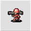 Stronger, slower, and more expensive than Infantry, Mechanized Infantry (more commonly referred to as Mechs) are still relatively inexpensive and versatile units.
Like Infantry, Mechs are also able to Capture Properties on the map. When given a choice, it is generally preferable to have Infantry commit to capturing over Mechs, as Mechs are slower than Infantry, but much more powerful offensively.
Offensively, Mechs are comparable to Tanks in terms of power, allowing them to do moderate amounts of damage to lightly armored ground units if allowed to get the first strike. Against foot soldiers, Mechs are stronger than Infantry both offensively and defensively.
While stronger than Infantry defensively, Mechs still have relatively low defense and rely on heavy terrain to survive. Combined with their much higher cost relative to Infantry, Mechs make poor blocking units. They do make strong supporting units, however, deterring opposing light units from attacking your more valuable units without suffering a retaliatory attack from a Mech.
While both Mech and Infantry are classified as foot soldiers, Mech's have a set movement range and cost that does not change under any weather or terrain condition.
| Cost | 3000 |
| Movement | 2 (Foot) |
| Fuel | 70 |
| Range | 1 |
| Primary Weapon | Bazooka |
| Ammo | 3 |
| Secondary Weapon | Machine Gun |
| Vision | 2 |
| Special Commands | Capture |
| Targetable Unit | Damage Given | Damage Taken |
|---|---|---|
| Infantry | 65 | 45 |
| Mech | 55 | 55 |
| Recon | 85 | 18 | 65 |
| APC | 75 | 20 | - |
| Tank | 55 | 6 | 70 |
| Medium Tank | 15 | 1 | 95 |
| Anti-Air | 65 | 6 | 105 |
| Artillery | 70 | 32 | 85 |
| Rocket | 85 | 35 | 90 |
| Missile | 85 | 35 | - |
| Neotank | 15 | 1 | 115 |
| Megatank | 5 | 1 | 125 |
| Piperunner | 55 | 6 | 90 |
| T-Copter | 35 | - |
| B-Copter | 9 | 75 |
| Bomber | - | 110 |
| Stealth | - | 90 |
| Battleship | - | 90 |
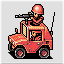 Light, fast, and inexpensive, Recons make excellent scouting and harassment units.
The primary role of the Recon is to provide vision in Fog of War games. With 5 vision, Recons have the highest vision in the game, tied with Subs, Missiles and foot soldiers on Mountains, while also being much more mobile than the others. Recons are critical for identifying possible targets in Fog, as units cannot attack what they cannot see.
Even if Fog of War is not enabled, recons still have situational uses. Being inexpensive and very fast, Recons are excellent at disrupting enemy Capture operations in the early game.
In combat, Recons are mediocre attackers at best. They can only deal high damage to foot soldiers, and deal middling damage to Indirect Units. Any other Direct Combat unit (save for other Recons) will handily beat the Recon in combat, unless they are severely weakened. As such, recons are rarely seen outside of the early game or Fog of War matches.
| Cost | 4000 |
| Movement | 8 (Wheel) |
| Fuel | 80 |
| Range | 1 |
| Primary Weapon | None |
| Ammo | N/A |
| Secondary Weapon | Machine Gun |
| Vision | 5 |
| Targetable Unit | Damage Given | Damage Taken |
|---|---|---|
| Infantry | 70 | 12 |
| Mech | 65 | 85 | 18 |
| Recon | 35 | 35 |
| APC | 45 | - |
| Tank | 6 | 85 | 40 |
| Medium Tank | 1 | 105 | 45 |
| Anti-Air | 4 | 60 |
| Artillery | 45 | 80 |
| Rocket | 55 | 90 |
| Missile | 28 | - |
| Neotank | 1 | 125 | 65 |
| Megatank | 1 | 195 |
| Piperunner | 6 | 90 |
| T-Copter | 35 | - |
| B-Copter | 10 | 55 | 30 |
| Bomber | - | 105 |
| Stealth | - | 85 |
| Battleship | - | 90 |
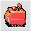 The most notable function of the Armored Personnel Carrier (APC) is the loading and transporting of one Infantry or Mech unit at a time, offering them more mobility in open terrain.
While loaded, the APC will also protect the unit it is carrying from attack, with the APC taking full damage instead. If the APC is destroyed while a unit is currently loaded in it, the loaded unit will be instantly destroyed along with the APC.
Moving the APC will not actually end its turn, and it can be loaded or unloaded as many times at any point during your turn as long as there are adjacent spaces available for foot soldiers to be dropped. When being unloaded, a unit will not be able to take any more actions for the turn.
The secondary function of the APC is to resupply any adjacent units of the same army. Doing so will completely refill the Fuel and Ammo stocks of any adjacent units. APCs will automatically resupply adjacent units at the start of your turn, and can also be manually told to resupply in the action menu. Resupplying will end the APCs turn as if it were being told to wait.
| Cost | 5000 |
| Movement | 6 (Treads) |
| Fuel | 70 |
| Vision | 1 |
| Special Commands | Supply, Load |
| Targetable Unit | Damage Taken |
|---|---|
| Infantry | 14 |
| Mech | 75 |
| Recon | 45 |
| Tank | 75 |
| Medium Tank | 105 |
| Anti-Air | 50 |
| Artillery | 70 |
| Rocket | 80 |
| Neotank | 125 |
| Megatank | 195 |
| Piperunner | 80 |
| B-Copter | 60 |
| Bomber | 105 |
| Stealth | 85 |
| Battleship | 80 |
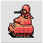 (Light) Tanks are one of the most important units in the game, with the early and mid game phases typically being decided by who can make better use of their Tanks.
The Tank offers a good mix of mobility, firepower, and defense, making for a very versatile unit. Tanks have little to fear from Infantry and Recon units, taking minimal damage from them and doing high damage in return. Tanks are also capable of attacking Artillery units from beyond their range, making them good units for combating exposed Artillery.
As the game progresses, Tanks will become less critical to build, but are still vital units to any army, being good escort and support units for higher tier units. Tanks are quite efficient at dealing damage to Anti-Airs and Indirect units, opening up new target opportunities for friendly B-Copters and Land units, respectively.
| Cost | 7000 |
| Movement | 6 (Tread) |
| Fuel | 70 |
| Range | 1 |
| Primary Weapon | Light Cannon |
| Ammo | 9 |
| Secondary Weapon | Machine Gun |
| Vision | 3 |
| Targetable Unit | Damage Given | Damage Taken |
|---|---|---|
| Infantry | 75 | 5 |
| Mech | 70 | 55 | 6 |
| Recon | 85 | 40 | 6 |
| APC | 75 | 45 | - |
| Tank | 55 | 6 | 55 | 6 |
| Medium Tank | 15 | 1 | 85 | 8 |
| Anti-Air | 65 | 5 | 25 |
| Artillery | 70 | 45 | 70 |
| Rocket | 85 | 55 | 90 |
| Missile | 85 | 30 | - |
| Neotank | 15 | 1 | 105 | 10 |
| Megatank | 10 | 1 | 180 | 10 |
| Piperunner | 55 | 6 | 80 |
| T-Copter | 40 | - |
| B-Copter | 10 | 55 | 6 |
| Bomber | - | 105 |
| Stealth | - | 75 |
| Lander | 10 | - |
| Cruiser | 5 | - |
| Battleship | 1 | 80 |
| Sub | 1 | - |
| Carrier | 1 | - |
| Black Boat | 10 | - |
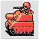 Larger, slower, and considerably more powerful than Tanks, Medium Tanks (Often abbreviated Md. Tank) are forces to be reckoned with.
Md. Tanks function similarly to Tanks, but trade 1 Movement point (and less utility overall) for stronger offensive and defensive strength. They will outright destroy or cripple lighter armored units, such as Infantry, Tanks, and indirect combat units. Md. Tanks can hold their own against other Md. Tanks and Neotanks, with whichever getting the first strike coming out ahead.
Despite their strengths, it is not recommended to rush purchasing Md. Tanks as soon as possible, as their lower speed and over double price compared to Tanks will reduce early game map presence. If a game is roughly even between players with groups of Tanks, a Md. Tank is a good buy to tip the odds in your favor, as a well-used Md. Tank counters Tanks handily.
| Cost | 16000 |
| Movement | 5 (Tread) |
| Fuel | 60 |
| Range | 1 |
| Primary Weapon | Medium Cannon |
| Ammo | 8 |
| Secondary Weapon | Machine Gun |
| Vision | 1 |
| Targetable Unit | Damage Given | Damage Taken |
|---|---|---|
| Infantry | 105 | 1 |
| Mech | 95 | 15 | 1 |
| Recon | 105 | 45 | 1 |
| APC | 105 | - |
| Tank | 85 | 8 | 15 | 1 |
| Medium Tank | 55 | 55 |
| Anti-Air | 105 | 7 | 10 |
| Artillery | 70 | 45 | 70 |
| Rocket | 105 | 55 |
| Missile | 105 | - |
| Neotank | 45 | 75 |
| Megatank | 25 | 125 |
| Piperunner | 85 | 55 |
| T-Copter | 45 | - |
| B-Copter | 12 | 25 |
| Bomber | - | 95 |
| Stealth | - | 70 |
| Lander | 35 | - |
| Cruiser | 55 | - |
| Battleship | 10 | 55 |
| Sub | 10 | - |
| Carrier | 10 | - |
| Black Boat | 35 | - |
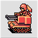 As their name implies, the primary use of an Anti-Air is to fight Air units. They do very high damage to them, especially Copter units. These units have little to fear from B-Copters in particular, taking minimal damage from them while dealing extreme damage in return. Anti-Airs also deal high damage to plane-type air units, while costing significantly less in the process.
Anti-Airs are also capable of decimating Infantry and Mech units, with a full-HP Anti-Air capable of instantly destroying them if they are on Roads. This can prove invaluable in punching through a defensive line of Infantry that Tanks could not otherwise handle on their own.
Anti-Airs are also decently effective at attacking light-armored units, such as Indirects, but less powerful than Tanks in this regard. Anti-Airs deal poor damage to Tanks, and next to no damage to any heavier tanks, so those units should be avoided.
| Cost | 8000 |
| Movement | 6 (Tread) |
| Fuel | 60 |
| Range | 1 |
| Primary Weapon | Vulcan Cannon |
| Ammo | 9 |
| Secondary Weapon | None |
| Vision | 2 |
| Targetable Unit | Damage Given | Damage Taken |
|---|---|---|
| Infantry | 105 | 5 |
| Mech | 105 | 65 | 6 |
| Recon | 60 | 4 |
| APC | 50 | - |
| Tank | 25 | 65 | 5 |
| Medium Tank | 10 | 105 | 7 |
| Anti-Air | 45 | 45 |
| Artillery | 50 | 75 |
| Rocket | 55 | 85 |
| Missile | 55 | - |
| Neotank | 5 | 115 | 17 |
| Megatank | 1 | 195 | 17 |
| Piperunner | 25 | 85 |
| T-Copter | 105 | - |
| B-Copter | 105 | 25 | 6 |
| Fighter | 65 | - |
| Bomber | 75 | 95 |
| Stealth | 75 | 50 |
| Black Bomb | 120 | - |
| Battleship | - | 85 |
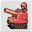 Artillery are low-cost indirect vehicles. They serve as the primary defensive unit projecting power across front-lines.
Artillery sacrifice overall mobility for increased damage output. Their attacks deal moderate to high damage against Land and Naval units, with the exception of the Mega Tank, and so are considered the most cost-effective counters to Medium Tanks and Neotanks.
Artillery are also better-equipped to handle certain terrain elements that hinder or stop land units, being able to fire over Mountains, Rivers, and Pipes. Due to these properties, Artillery are fundamental to most army compositions.
Despite their strengths, exclusive use of Artillery will not win battles. Artillery have poor defense in addition to being unable to counterattack; they take significant damage from all units, including multiple Infantry attacks. Artillery have limited mobility and therefore work best when protected by other units such as infantry.
| Cost | 6000 |
| Movement | 5 (Tread) |
| Fuel | 50 |
| Range | 2-3 |
| Primary Weapon | Cannon |
| Ammo | 9 |
| Secondary Weapon | None |
| Vision | 1 |
| Targetable Unit | Damage Given | Damage Taken |
|---|---|---|
| Infantry | 90 | 15 |
| Mech | 85 | 70 | 32 |
| Recon | 80 | 45 |
| APC | 70 | - |
| Tank | 70 | 70 | 45 |
| Medium Tank | 45 | 105 | 45 |
| Anti-Air | 75 | 50 |
| Artillery | 75 | 75 |
| Rocket | 80 | 80 |
| Missile | 80 | - |
| Neotank | 40 | 115 | 65 |
| Megatank | 15 | 195 | 65 |
| Piperunner | 70 | 80 |
| B-Copter | - | 65 | 25 |
| Bomber | - | 105 |
| Stealth | - | 75 |
| Lander | 55 | - |
| Cruiser | 50 | - |
| Battleship | 40 | 80 |
| Sub | 60 | - |
| Carrier | 45 | - |
| Black Boat | 55 | - |
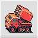 The more advanced version of Artillery, Rockets trade higher damage and a much larger range for lighter armor and a more restrictive movement type.
Like Artillery, Rockets are Indirect Combat units. Rockets possess a much higher maximum range of attack compared to Artillery, but also a higher minimum range. While Artillery are only incapable of hitting units adjacent to them, Rockets may not hit any units within two spaces of them. As such, Rockets need to be more carefully placed in formations.
In addition to higher range, Rockets have higher damage potential compared to Artillery, being roughly 10% stronger offensively on average.
| Cost | 15000 |
| Movement | 5 (Wheel) |
| Fuel | 50 |
| Range | 3-5 |
| Primary Weapon | Rockets |
| Ammo | 6 |
| Secondary Weapon | None |
| Vision | 1 |
| Targetable Unit | Damage Given | Damage Taken |
|---|---|---|
| Infantry | 95 | 25 |
| Mech | 90 | 85 | 35 |
| Recon | 90 | 55 |
| APC | 80 | - |
| Tank | 90 | 85 | 55 |
| Medium Tank | 55 | 105 |
| Anti-Air | 85 | 55 |
| Artillery | 80 | 80 |
| Rocket | 85 | 85 |
| Missile | 90 | - |
| Neotank | 50 | 125 |
| Megatank | 25 | 195 |
| Piperunner | 80 | 85 |
| B-Copter | - | 65 | 25 |
| Bomber | - | 105 |
| Stealth | - | 85 |
| Lander | 60 | - |
| Cruiser | 85 | - |
| Battleship | 55 | 85 |
| Sub | 85 | - |
| Carrier | 60 | - |
| Black Boat | 60 | - |
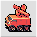 Missiles are highly specialized units, only able to hit Air units from range. They can be considered to be the equivalent of Rockets versus Air units, but tend to be less effective due to Air units having better movement.
Missiles are designed to destroy Air units, either instantly destroying or dealing very high damage to any Air units that venture into its range. In typical games however, this rarely happens, as all Air units have higher movement ranges than Missiles have firing ranges. Combined with its low movement speed and bad movement type, Missiles are extremely easy to outmaneuver with Air units.
Despite this weakness, Missiles can be used to deny Air unit attacks on a group of units, as long as the Missile is well protected and the units are all within Missile range.
| Cost | 12000 |
| Movement | 4 (Wheel) |
| Fuel | 50 |
| Range | 3-5 |
| Primary Weapon | Missiles |
| Ammo | 6 |
| Secondary Weapon | None |
| Vision | 5 |
| Targetable Unit | Damage Given | Damage Taken |
|---|---|---|
| Infantry | - | 25 |
| Mech | - | 85 | 35 |
| Recon | - | 28 |
| Tank | - | 85 | 30 |
| Medium Tank | - | 105 |
| Anti-Air | - | 55 |
| Artillery | - | 80 |
| Rocket | - | 90 |
| Neotank | - | 125 |
| Megatank | - | 195 |
| Piperunner | - | 90 |
| T-Copter | 120 | - |
| B-Copter | 120 | 65 |
| Fighter | 100 | - |
| Bomber | 120 | 105 |
| Stealth | 100 | 95 |
| Black Bomb | 120 | - |
| Battleship | - | 90 |
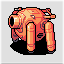 Being very similar to Md. Tanks, Neotanks fulfill many of the same purposes. They, however, have 1 additional movement point, and are roughly 20% stronger offensively and 10% stronger defensively when compared to a Md. Tank.
The main benefit of a Neotank over a Md. Tank is it is much more reliable to completely destroy Full-HP Tank units, something that Md. Tanks cannot do without multiple boosts to its offense. It is also much more able to destroy other units, such as Infantry and Artillery with one attack, even if the Neotank has sustained some damage. Its increased movement capabilities will also allow it to close gaps slightly more efficiently than Md. Tanks.
The main fault of a Neotank is its price; for the same price of a Neotank, one can buy both a Md. Tank and an Artillery, which is usually a much more efficient use of funds. Neotanks still take high damage from Indirect fire, even with its slightly increased defense, so care must be taken around those units.
| Cost | 22000 |
| Movement | 6 (Tread) |
| Fuel | 99 |
| Range | 1 |
| Primary Weapon | Neo Cannon |
| Ammo | 9 |
| Secondary Weapon | Machine Gun |
| Vision | 1 |
| Targetable Unit | Damage Given | Damage Taken |
|---|---|---|
| Infantry | 125 | 1 |
| Mech | 115 | 15 | 1 |
| Recon | 125 | 65 | 1 |
| APC | 125 | - |
| Tank | 105 | 10 | 15 | 1 |
| Medium Tank | 45 | 75 |
| Anti-Air | 115 | 17 | 5 |
| Artillery | 115 | 65 | 40 |
| Rocket | 125 | 50 |
| Missile | 125 | - |
| Neotank | 55 | 55 |
| Megatank | 35 | 115 |
| Piperunner | 105 | 50 |
| T-Copter | 55 | - |
| B-Copter | 22 | 20 |
| Bomber | - | 90 |
| Stealth | - | 60 |
| Lander | 50 | - |
| Cruiser | 50 | - |
| Battleship | 15 | 50 |
| Sub | 15 | - |
| Carrier | 15 | - |
| Black Boat | 40 | - |
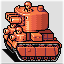 Slow and expensive, but boasting massive amounts of offensive and defensive power, Mega Tanks are the ultimate in ground-based firepower.
The Mega Tank is a unit that deals in extremes. Its cannon is capable of completely obliterating any Land unit in one shot, save for other Mega Tanks. They will need to be close to full HP to do this to Md. Tanks and Neotanks. Against lighter-armored Ground units, Mega Tanks can still destroy whole units when they are at 6 or 7 HP, depending on terrain.
This firepower comes at the price of low ammo capacity, however. With only 3 shots before needing to resupply, a Mega Tank can easily run out of ammo if not careful, losing a ton of firepower in the process.
Similarly to its raw offensive power, a Mega Tank has sky-high defense, taking low to middling damage from any other unit, save for other Mega Tanks. As a result of its heavy armor, the Mega Tank is also a very slow unit, usually being the slowest ground vehicle and taking a considerable amount of time to reach the front lines.
| Cost | 28000 |
| Movement | 4 (Tread) |
| Fuel | 50 |
| Range | 1 |
| Primary Weapon | Mega Cannon |
| Ammo | 3 |
| Secondary Weapon | Machine Gun |
| Vision | 1 |
| Targetable Unit | Damage Given | Damage Taken |
|---|---|---|
| Infantry | 135 | 1 |
| Mech | 125 | 5 | 1 |
| Recon | 195 | 1 |
| APC | 195 | - |
| Tank | 180 | 10 | 10 | 1 |
| Medium Tank | 125 | 25 |
| Anti-Air | 195 | 17 | 1 |
| Artillery | 195 | 65 | 15 |
| Rocket | 195 | 25 |
| Missile | 195 | - |
| Neotank | 115 | 35 |
| Megatank | 65 | 65 |
| Piperunner | 180 | 25 |
| T-Copter | 55 | - |
| B-Copter | 22 | 20 |
| Bomber | - | 35 |
| Stealth | - | 15 |
| Lander | 75 | - |
| Cruiser | 65 | - |
| Battleship | 45 | 25 |
| Sub | 45 | - |
| Black Boat | 45 | - |
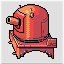 Very fast, very strong, but completely map-dependent in terms of their viability, Piperunners are unique, if situational units. Unit strategy will assume that a Piperunner being used will actually have pipes to travel along.
Piperunners are incredibly versatile Indirect Combat units, being able to attack any other unit in the game with the exception of dived Subs and hidden Stealths. Their combat power is not to be underestimated either, dealing high damage to any enemy unit hit, comparable in firepower to a Battleship.
The largest shortcoming of the Piperunner is its incredibly limited movement, being able to only traverse Pipes, Pipe Seams, and Bases. If a Piperunner is built on a base without any connecting pipes, it will be completely immobile. However, Piperunners are incredibly nimble, being able to travel very quickly along pipes and are not slowed by any weather conditions.
| Cost | 20000 |
| Movement | 9 (Pipe) |
| Fuel | 99 |
| Range | 2-5 |
| Primary Weapon | Pipe Cannon |
| Ammo | 9 |
| Secondary Weapon | None |
| Vision | 4 |
| Targetable Unit | Damage Given | Damage Taken |
|---|---|---|
| Infantry | 95 | 5 |
| Mech | 90 | 55 | 6 |
| Recon | 90 | 6 |
| APC | 80 | - |
| Tank | 80 | 55 | 6 |
| Medium Tank | 55 | 85 |
| Anti-Air | 85 | 25 |
| Artillery | 80 | 70 |
| Rocket | 85 | 80 |
| Missile | 90 | - |
| Neotank | 50 | 105 |
| Megatank | 25 | 180 |
| Piperunner | 80 | 80 |
| T-Copter | 105 | - |
| B-Copter | 105 | 55 |
| Figher | ||
| Bomber | 75 | 105 |
| Stealth | 75 | 80 |
| Black Bomb | 120 | - |
| Lander | 60 | - |
| Cruiser | 85 | - |
| Battleship | 55 | 80 |
| Sub | 85 | - |
| Carrier | 60 | - |
| Black Boat | 60 | - |